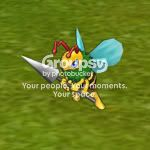
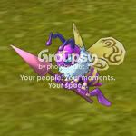
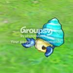
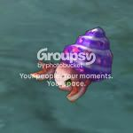

Insect
Dust Spider
Level : 16
HP : 225
EXP / Job EXP : 53 / 49
Attribute :
 Personality
Personality : Link All
Map :
Utena Lake /
East Acronia Coast
Item : Spider Wine / Thread / Arakne Thread /
Great Thread / Power Crystal /
Tarantula Thread /
Dust Spider Stamp
Huge Spider
Level : 27
HP : 2,400
EXP / Job EXP : 180 / 150
Attribute :
Personality : Link All
Map :
Utena Lake
Item : Spider Wine / Thread / Arakne Thread /
Great Thread /
Tarantula Thread
Tarantura
Level : 27
HP : 440
EXP / Job EXP : 170 / 136
Attribute :
Personality : Active
Map :
Ancient Coal Mine B1F-B2F / Ancient Dungeon[รังแมงมุม เขาวงกตใต้ดิน]
Item : Spider Wine / Thread / Great Thread / Arakne Thread /
Power Crystal /
Tarantula Thread /
Tarantula Stamp
Hanya Spider
Level : 62
HP : 2,550
EXP / Job EXP : 1,125 / 1,500
Attribute :
Personality : Link All
Map : Ancient Dungeon[คุกที่น่าสะพรึง]
Item : Spider Wine / Arakne Thread / Power Crystal /
Great Thread /
Tarantula Thread
Red Dust Spider
Level : 77
HP : 5,000
EXP / Job EXP : 3,750 / 3,600
Attribute :
 Personality
Personality : Link All
Map :
Baobub Forest
Item : Veggy Juice / Plum Throat Candy / Lead Nugget / Arakne Thread /
Herb Candy /
Pumpkin
Gold Spider
Level : 91
HP : 12,000
EXP / Job EXP : 4,800 / 4,650
Attribute :
 Personality
Personality : Link Gold Spider / Shine Bee
Map :
Baobab Forest(Night)
Item : Veggy Juice / Spider White Wine / Arakne Thread / Gold Nugget / Critical Crystal /
Pumpkin
Black Demon Spider
Level : 49
HP : 14,500
EXP / Job EXP : 5,100 / 6,480
Attribute :
Personality : Active
Map : Ancient Dungeon[ฝูงปีศาจ]
Item : Spider Wine / Mold / Poison Sting
 Yasha Spider
Level
Yasha Spider
Level : 50
HP : 16,550
EXP / Job EXP : 6,480 / 6,600
Attribute :
Personality : Active
Map : Ancient Dungeon[ฝูงปีศาจ]
Item : Antidote Fruit / Thread / Easy Thread
Crawler
Level : 3
HP : 60
EXP / Job EXP : 8 / 5
Attribute :
 Personality
Personality : Non Active
Map :
East Acronia Field /
North Acronia Field /
West Acronia Field /
South Acronia Field /
Acronia Forest /
Fareast Highway /
Utena Lake /
East Acronia Coast
Item : Keetin / Veggy Juice / Green Seriko /
Chrisalid /
Miracle Chrisalid /
Crawler Stamp
Big Crawler
Level : 15
HP : 3,000
EXP / Job EXP : 150 / 90
Attribute :
Personality : Link All
Map :
East Acronia Coast
Item : Keetin / Veggy Juice / Green Seriko /
Chrisalid /
Miracle Chrisalid /
Big Crawler Stamp
Sand Crawler
Level : 14
HP : 135
EXP / Job EXP : 43 / 26
Attribute :
 Personality
Personality : Non Active
Map :
Utena River /
Utena Lake /
Steap Desert /
Sourin Cape
Item : Keetin / Crawler Lash / Yellow Seriko /
Chrisalid /
Miracle Chrisalid /
Sand Crawler Stamp
Caterpillar
Level : 16
HP : 160
EXP / Job EXP : 60 / 43
Attribute :
Personality : Non Active
Map :
East Acronia Coast
Item : Keetin / Red Seriko / Crawler Lash /
Chrisalid /
Miracle Chrisalid /
Caterpillar Stamp
Elder Worm
Level : 20
HP : 160
EXP / Job EXP : 75 / 75
Attribute :
Personality : Link All
Map :
East Acronia Coast / Ancient Dungeon[เขาวงกตใต้ดิน ค้นหาเขาวงกต]
Item : Keetin / Crawler Lash / Purple Seriko /
Chrisalid /
Miracle Chrisalid /
Elder Worm Stamp
Great Elder Worm
Level : 50
HP : 500,000
EXP / Job EXP : 75 / 75
Attribute :
Personality : Active
Map : East Acronia Coast Pet School Training
Item : No
Larva
Level : 16
HP : 160
EXP / Job EXP : 51 / 51
Attribute :
Personality : Active / Link Bee Type
Map :
Bee Hive
Item : Row / Barley Powder / Egg / Milk /
Butter / Critical Crystal
Jersey Worm
Level : 24
HP : 350
EXP / Job EXP : 150 / 90
Attribute :
Personality : Non Active
Map :
Momo Plain /
Barn
Item : Keetin / Pet Food / Fer /
White Fer /
Crawler Carrier(Green)
Rock Eater
Level : 40
HP : 930
EXP / Job EXP : 608 / 375
Attribute :
Personality : Active
Map :
Volcano /
Iron South Highway / Ancient Dungeon[เงาขาวที่ซ่อน เขาวงกตใต้ดิน]
Item : Great Pebble / Alloy Stone4 / Steel Sand / Alloy Stone / Critical Crystal / Alloy Stone 2 /
Rock Eater Stamp
Chibee
Level : 4
HP : 88
EXP / Job EXP : 10 / 9
Attribute :
 Personality
Personality : Link Bee Type
Map :
Bee Hive
Item : Antidote Fruit

Killer Bee
Level : 7
HP : 50
EXP / Job EXP : 17 / 14
Attribute :
Personality : Link Bee Type
Map :
Kill Bee Hill /
Bee Hive /
Fruit Forest /
Morg Cliff /
Warship Island /
Undead Island /
West Acronia Field
Item : Honey / Bee Sting /
Row / Critical Crysta /
Killer Bee Stamp
Wasp
Level : 20
HP : 155
EXP / Job EXP : 87 / 83
Attribute :
Personality : Link Bee Type
Map :
Bee Hive /
Morg Cliff /
Warship Island /
Undead Island / Ancient Dungeon[ค้นหาเขาวงกต]
Item : Bee Sting / Royal Jelly / Critical Crystal /
Copper Medal /
Wasp Stamp

Queen Bee
Level : 32
HP : 245
EXP / Job EXP : 298 / 298
Attribute :
Personality : Link Bee Type
Map :
Killer Bee Hill /
Fruit Forest /
Warship Island /
Morf Cliff / Ancient Dungeon[นักฆ่าเขาวงกต เขาวงกตใต้ดิน]
Item : Honey / Royal Jelly /
Critical Crystal /
Copper Medal /
Queen Bee Stamp
Black Killer Bee
Level : 75
HP : 4,600
EXP / Job EXP : 3,995 / 4,250
Attribute :
Personality : Link Shine Bee / Red Dust Spider
Map :
Baobub Forest
Item : Cold Candy / Honey / Riped Magical Book / Magnet / Magic Crystal
ShineBee
Level : 90
HP : 10,000
EXP / Job EXP : 5,610 / 5,100
Attribute :
Personality : Link Shine Bee / Red Dust Spider
Map :
Baobub Forest(Night)
Item : Cold Candy / Riped Magical Book / Forbidden Fruit / Keseranpasaran / Magic Crystal
Stinger
Level : 10
HP : 4,500
EXP / Job EXP : 225 / 120
Attribute :
Personality : Active
Map :
Bee Hive
Item : Royal Jelly

Pliers Shell
Level : 30
HP : 1,500
EXP / Job EXP : 375 / 450
Attribute :
 Personality
Personality : Non Active
Map :
Waterlayer
Item : Snowdrop / Black Vineger / Pearl Shell / Pearl /
Conch /
Blue Conch

Blue Pliers
Level : 72
HP : 11,000
EXP / Job EXP : 3,600 / 3,825
Attribute :
Personality : Non Active
Map :
Seafloor Cave(Warm)
Item : Seriko / Dark Cologne / Pearl Shell / Shell A / Purple Conch / Pearl
GongGong
Level : 82
HP : 13,580
EXP / Job EXP : 4,125 / 4,650
Attribute :
Personality : Non Active
Map :
Seafloor Cave(Cold)
Item : Antidote Fruit / Spider White Wine / Pearl Shell / Shell A / Pearl /
Brown Conch
Momo Dust Spider
Level : 16
HP : 255
EXP / Job EXP : 47 / 44
Attribute :
Personality : Non Active
Map :
Warship Island [Dominion] /
Warship Island (Night) /
Step Canyon /
Golden Bridge (Night)
Item : Antidote Fruit /
Thread / Riped Magical Book / Arakne Thread /
Critical Crystal
 Butterfly(Red)
Level
Butterfly(Red)
Level : 100
HP : 46,590
EXP / Job EXP : 10,470 / 10,500
Attribute :
Personality : Non Active
Map :
Item :
Fearful Butterfly's Wing / Phosphorus Dust / Soul Dust / Throat Candy /
Shiny Powder
 Butterfly(Blue)
Level
Butterfly(Blue)
Level : 116
HP : 52,500
EXP / Job EXP : 10,902 / 11,070
Attribute :
Personality : Non Active
Map :
Item : Fearful Butterfly's Wing / Phosphorus Dust / Soul Dust / Throat Candy /
Fearful Butterfly's Wing /
Shiny Powder